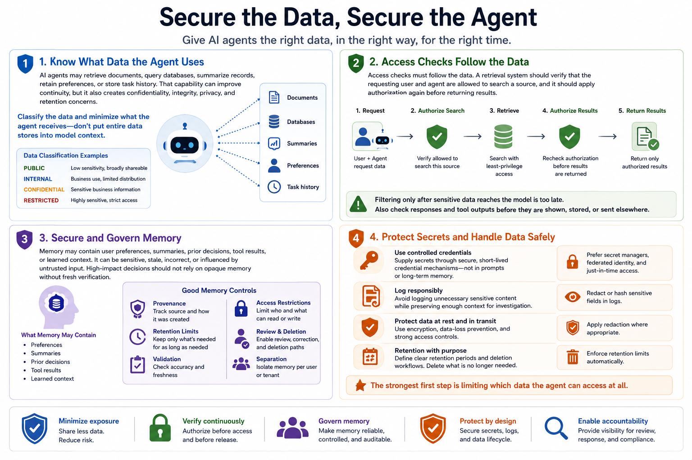

Securing AI Agents
Data Access and Memory
Connecting to LMS... Progress: in progress
Version 1.0 | Date: 2026-06-21
This course provides educational information about securing AI agent systems. It is not legal advice, product-specific implementation guidance, or offensive security training.

Narration
AI agents may retrieve documents, query databases, summarize records, retain preferences, or store task history. That capability can improve continuity, but it also creates confidentiality, integrity, privacy, and retention concerns. Security teams should classify the data involved and minimize what the agent receives rather than placing entire data stores into model context.
Access checks must follow the data. A retrieval system should verify that the requesting user and agent are allowed to search a source, and it should apply authorization again before returning results. Filtering only after sensitive data reaches the model is too late. Responses and tool outputs should also be checked before information is shown, stored, or sent elsewhere.
Memory may contain user preferences, summaries, prior decisions, tool results, or learned context. It can be sensitive, stale, incorrect, or influenced by untrusted input. Good memory controls include provenance, retention limits, validation, access restrictions, review and deletion paths, and separation between users or tenants. High-impact decisions should not rely on opaque memory without fresh verification.
Secrets should be supplied through controlled credential mechanisms, not embedded in prompts or long-term memory. Logging should avoid unnecessary sensitive content while preserving enough context for investigation. Encryption, data-loss controls, redaction, and clear retention policies support safer handling, but the strongest first step is limiting which data the agent can access at all.